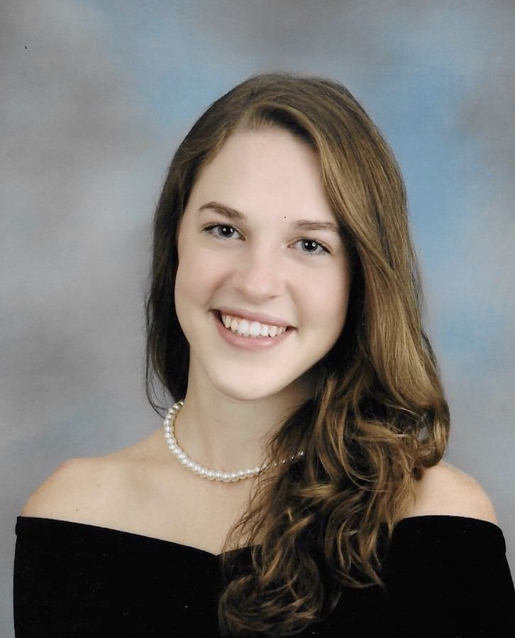

I am a senior computer science major with a mathematics minor and am originally from Buffalo, NY.
Additionally, I am currently in the Accelerated Master's Program for a Master's in computer science and hope to work in medical technology/software after graduation.
I have prior experience with JavaScript and some database work and look forward to the process of completing this project!
Contact Info: klandrzejewski@crimson.ua.edu
I am in my final semester of computer science and will move on to getting my MBA with a concentration in business analytics.
I would love to do analytics for a larger tech company when I graduate, preferably on the east coast.
I work with databases almost every day at the University's IDA, so I am interested in using that knowledge with the JavaScript skills that I have. I hope to learn a lot about website development and their database(s).
Contact Info: agardner4@crimson.ua.edu
I am a senior computer science major with a mathematics minor and am originally from Rosendale, WI
I am also in the Accelerated Master's Program for Computer Science. I would love to work in Software Developemnt, possibly at Schneider National where I interned this past summer, and will intern again next summer.
I have prior experience with front end development, and would love to learn more of the backend side of things.
Contact Info: mslalor@crimson.ua.edu
I am a senior majoring in computer science. I grew up in Wauconda, IL, in the Northwest suburbs of Chicago.
Although I don't have too much experience with the front end, it interests me as I've always had a more creative side. My goal is to work with mobile app development.
I'm hoping to dig deeper into the front end with this project and am excited to learn how to develop a full stack application.
Contact Info: mtkantorski@crimson.ua.edu